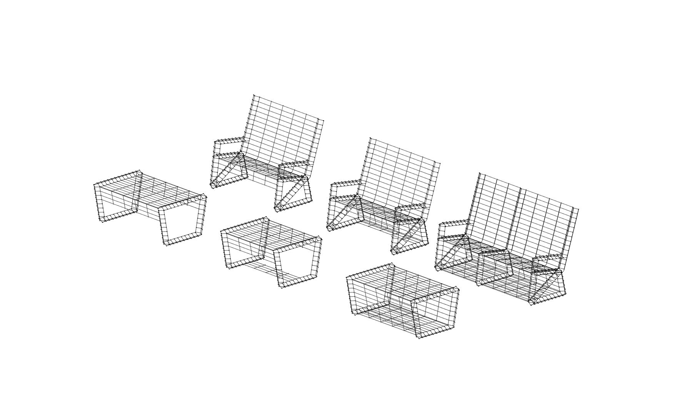
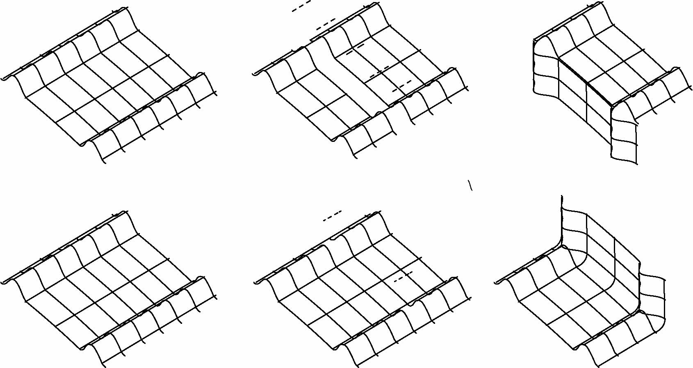
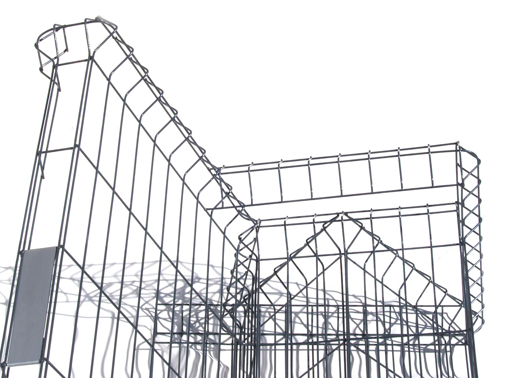

Mobilier Grillagé
2020
Quoi de plus pérenne que de fabriquer les objets qui nous entourent en utilisant des matières réemployées ?
C’est dans cette démarche que j’ai imaginé ce mobilier de jardin, fabriqué à partir d’un gisement de matière récupérée, le panneau grillagé rigide.
Un gisement possédant de nombreuses qualités :
Il est tramé d’un motif répétitif et orthogonal.
Il est léger et très résistant à la flexion dans sa hauteur.
Il est nervuré.
Il n’obstrue pas la vue.
Il est en acier et est facilement usinable.
C’est un matériau d’extérieur, traité contre les intempéries.
expérimentations formelles sur le logiciel Rhino
recherches sur la forme, les procédés de fabrication et l’économie de matière
Les nervures, présentes en des zones bien définies de la grille, dessinent la forme élégante et résistante des éléments de mobilier.
